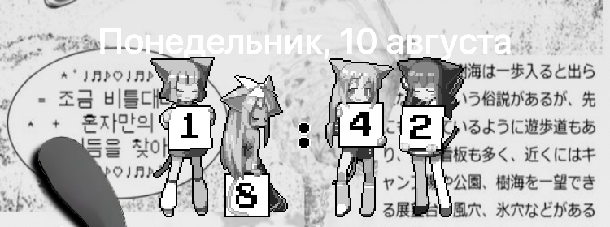

Replaces the lock screen clock with images, and lets you install your own digit packs.
Built against the CoverSheetKit lock screen, for iOS 18.
Features
- Animated or still digits
- Installable digit packs, imported and removed from Settings
- Adjustable digit size, spacing and vertical offset
- 12-hour, 24-hour or system time format
- Optional date hiding
- Colour tinting that keeps the artwork's shading, the way iOS tints app icons
- Switch to still frames while Low Power Mode is on
- Settings apply live, no respring needed
- Falls back to the stock clock if the selected pack is unusable
Digit packs
A pack is a folder whose name ends in .flexpack:
MyPack.flexpack/
├── Info.plist (optional)
├── animated/ 0.gif … 9.gif, colon.gif
└── static/ 0.png … 9.png, colon.pngAt least one of the two folders must exist; GIF and PNG both work. Import a pack from
Settings → FlexClock → Manage packs, or copy it into
/var/mobile/Library/FlexClock/Packs.
Requirements
- iOS 18, rootless jailbreak
preferenceloader